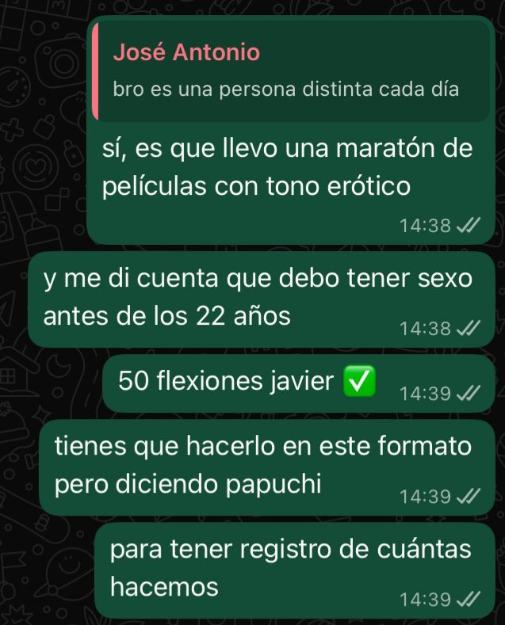

Tengo una presión extraña por no saber cómo comenzar un escrito. Estas últimas 18 horas han sido irreales, y no me esperaba casi nada de lo que ha sucedido. El jueves le había mencionado a Papuchi lo siguiente:
Y sí, cuando me dio hace como dos-tres días por empezar a hacer ejercicio para ser más atractivo, ahora estoy usando el chat de Papuchi para mantener la cuenta. Y que ojalá lo motive a él igual a hacer - ya hizo ayer, no recuerdo hoy.
Antes de los 22 años debía tener sexo, por alguna razón con aquella edad tope. La realización de un Javier del jueves. Mi vida con aquella declaración habría entonces tomado un nuevo rumbo, y las convicciones de mi alma han cobrado vida - y fíjate que no es una fuerza común, sino un hito que requerirá cruzar montañas con los dientes: ponerla. Y antes de los 22 años - o sino quizá moría. No sé.
18:17
me tomó una hora escribir dos párrafos
dos horas de sueño y la constante interrupción
no me permiten, no me dejan tranquilo
pero tú me pediste algo escrito para esta noche
¿puedo negártelo?
¿puedo defraudarte?
¿desobedecerte?
no puedo.
no lo tengo permitido
Estoy comiendo marraqueta tostada con mantequilla y queso. Me gusta meter el pan en café que ya se enfrió.
19:03Se me hace extraño ir a hacer pís. No tanto hacer pís, sino verme abajo. Ver mis manos. Saber dónde estuvo cada parte de mí. Me invaden la memoria, cada recuerdo y sensación me bombardea como si fuese La Moneda. Ay, tu rostro, Daniela. Eres una persona de tanto cariño, de tanta comprensión, de tanta paciencia. Es bastante mi suerte, es grande la dicha, es demasiado haberte conocido. Puedo cerrar mis ojos y verte, tan cerca, besándome los labios y queriéndonos tanto. Es adictivo, realmente, cuando la memoria está tan fresca, tan impregnada en tu carne, que puedes sentirlas todavía.
19:18Me gustó mucho cuando me hiciste callar para no hacer ruido. Esa tensión de mantener el silencio, ahogarnos entre nosotros, guardando un secreto sólo para los dos. Nadie sabe lo que hicimos, sólo nosotros - tú y yo, querida. Nadie más.
Incluso ChatGPT no lo sabrá. Le hice las preguntas necesarias sobre las pastillas del día después, pero le dije que el tema lo trataba para ayudar a unos amigos que conozco... Confidencialidad...
Pero ahora que me doy cuenta, ¿podría subir esto a Internet? La página podría visitarla cualquiera... ¿Cómo te iré a mostrar ésto?
19:25
Mi cuerpo se tambalea un poco. La falta de sueño me quiere cobrar pero le estoy negando mi consentimiento.
Así como he recorrido tu cuerpo por instinto y deseo, quiero disfrutar el proceso creativo de la
escritura y deslizarme sobre él lo mejor que pueda... para tu gusto, disfrute, gozo, afecto,
y urgencia, porque sé que me necesitas
y mucho
por eso me estás leyendo ahora mismo
porque te hago falta
porque me echas de menos
encima tuyo
debajo tuyo
dentro tuyo
tuyo
besándote con susurros de cariño, no puedo ser más feliz
créeme cuando te digo que no
no
no puedo cerrar mis ojos y no verte
no puedo no pensar en ti
¿así empezarán las adicciones?
quiero tenerte, mucho
una hora más, un día más
quiero que quieras
que yo sea tuyo
que quieras, desees, lo muestres
fúmate un cigarro mientras estoy encima tuyo
cómo me gustó que hicieras eso
la cabeza me da vueltas, daniela
todo lo que hicimos
lo que ahora somos
en lo que nos convertimos
siento que ya estoy mal de la cabeza
incluso te tengo todavía en el paladar
eres mía
eres mía
eres mía
sí, mi linda
eres mía
todo lo que te dije es verdad
todo, todo, todo
todo lo que te dije
lo vivo,
lo acepto,
lo defiendo - incluso si la vergüenza me ataca
porque me parece muy lindo acostarnos
y besarnos como se besan los casados
embestirnos como se embisten los amantes
abrazarnos como se abrazan los pololos
y vivir el resto de nuestros días
como los mejores amigos
daniela linda de mi vida
me estaba tocando el cabello
haciendo la hora en el trabajo
tocándome el cabello como lo habías hecho tú
como si mi mano, tuya
como si mi mano la tuya fuera
un pelo se me queda entrelazado
largo, no está enrulado. es más como
sutilmente ondulado
así como el tuyo
creo que era tuyo
me lo metí a la boca y lo lamí